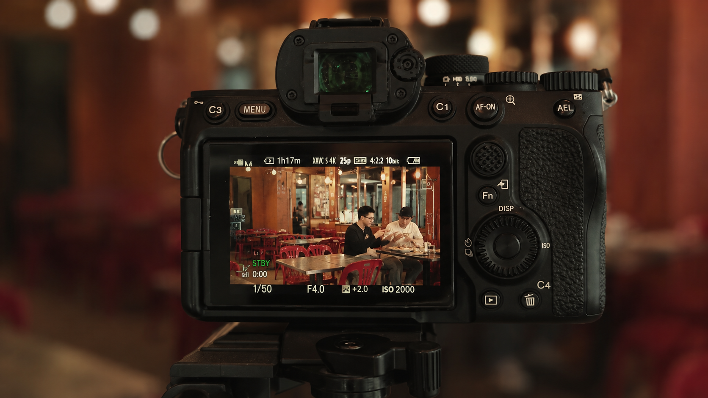
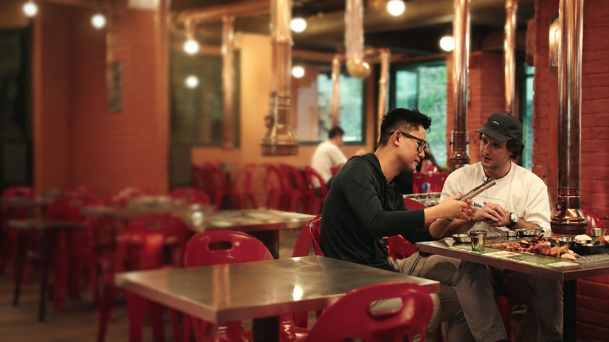
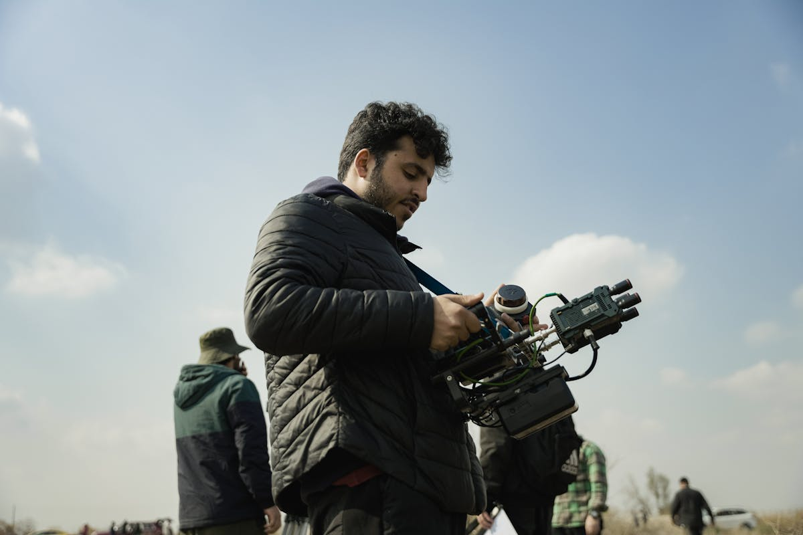

Fashion / Campaign
UK and international commercial videographer
Harrison Wills creates sharp commercial films, campaign assets and social-first content for fashion, beauty, hospitality, product, music and personal brands.


Positioning
The job is not just to make footage look polished. It is to understand what the audience needs to feel, what the brand needs to say, and how the final assets will actually be used.
Harrison works across campaign films, social edits, product pieces, restaurant and hotel content, model-led fashion visuals, music artist assets and personal brand films.
Selected work direction
Fast visual proof for the categories that matter most: model-led visuals, location atmosphere, product detail, artist energy and social-native campaign assets.
Fashion / Campaign

Hospitality / Lifestyle

Product / Beauty
Music / Creative Campaign
What Harrison creates
Built for brands that need the work to look premium and perform across the places people actually watch.
Brand films, launch assets and campaign pieces with a strong visual point of view.
Movement-led content for male and female models, labels, stylists and editorial shoots.
Detail-focused videos that make texture, packaging, usage and desirability clear fast.
Restaurant, hotel and venue content that sells mood, service, food and setting without overexplaining.
Performance clips, release visuals and backstage content shaped around the artist's tone.
Vertical edits, reels, hooks and cutdowns planned from the start rather than cropped later.
Selected client spaces

Case-study format
A premium content day can be planned around the full campaign: the main film, the short hooks, the vertical edits, the still frames and the behind-the-scenes proof.
Define the audience, the channel, the desired action and the visual reference point before the camera comes out.
Capture hero shots, human moments, product details and social-native variations while the set is already alive.
Package the final assets by channel so the brand can publish quickly without re-editing the work internally.
Approach
Clear planning, compact production and organised delivery keep the process sharp without turning the shoot into a slow agency machine.
Audience, references, usage, formats, locations, talent and must-have deliverables are locked before shoot day.
Lighting, movement, pacing and performance are handled with the final edit in mind.
Horizontal, vertical and cutdown versions are treated as separate assets, not afterthoughts.
Final files are named, compressed and organised so the content can move straight into launch, social or paid media.
About Harrison
Harrison Wills is a UK-based commercial videographer and content creator working with brands, artists, models, hospitality teams and creative collaborators across the UK and internationally.
His work sits between campaign filmmaking and social content: polished enough for a brand launch, agile enough for the speed of Instagram, TikTok, YouTube and paid social.
See current work on InstagramClient experience
Premium work is not only about the picture. It is about clear planning, confident direction and assets that arrive ready for launch.
The concept, references, usage and deliverables are clear before the shoot starts.
Models, founders, chefs, artists and teams know what is needed without the day feeling overproduced.
The final files are built for the channels they need to live on, from web hero films to vertical edits.
YouTube
Send a brief
Use the form for commercial video, fashion and beauty campaigns, hospitality content, product launches, music visuals, social-first shoots and personal brand films.
Instagram
The live channel for recent shoots, BTS and creator-led work.
Instagram is where new collaborators can check current taste, pace and production energy. The website keeps the strongest work curated; the feed keeps the brand alive between campaigns.
Open Instagram